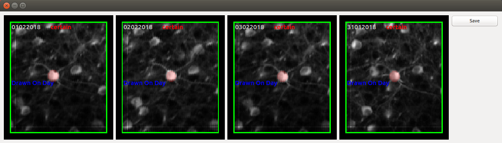

Matching ROIs across days
If the same group of cells is repeatedly imaged across days, many experiments require matching cells across days. To enable this,
Algorithmic Approach
The automatic approach works by registering local patches across the image day by day. Once you have ROI masks across the same imaging field of view (FOV) across multiple days, the ROI alignment can be performed by calling:
aggregate_rois.py /path/to/folder
where /path/to/folder is the path to folder that is parent to the hdf5 files with ROIs that should be algigned. Importantly, the folder must not contain other files. If there is no such parent folder, the code can be run by calling:
aggregate_rois.py /path/to/folder1 /path/to/folder2
optionally as many folders as desired
running this script creates an additional pickle file in each hdf5 directory
/home
/AIAK_2
/29082017
/...
/processed
/29082017_AIAK_2
29082017_AIAK_2.h5
29082017_AIAK_2_ROIS_glob.p
/GRABinfos
/stims
/regInfo
/ROIs
proc_log.txt
Across the ROIs_glob files belong each day, the index of each ROI is kept constant.
GUI for curation
In order to open the GUI for across day ROI curation, run
across_day_rois.py /path/to/folder
analogously to "aggregate_rois" as explained above. This should open the GUI:

Controls
Use arrow keys to cycle through ROIs. Double clicking one of the images leads to its selection (indicated by the box around it turning blue). Holding down shift then allows the ROI on a particular day to be moved around.
An additional feature is the assignment of confidence that a given set of ROIs are the same. Confidence is assigned by pressing 1,2 or 3 and then clicking on the ROI. To assign an ROI as being absent, click on an image while holding down the CRTL key. Finally, if a given day has multiple sessions, the mean images from each session can be cycled through by selecing a given ROI (by double clicking) and then moving through images by pressing the up and down arrow keys